LINGUAGENS.


EXPERIÊNCIAS.
- 2018 - Graduação em Tecnologia em Processos Ambientais pela UTFPR.
- 2020 - Curso de Inglês pela antiga Wizard - Almirante Tamandaré
(atual CNA Almirante Tamandaré). - 2021 - Monitora de Inglês pela CNA Idiomas - Almirante Tamandaré.
- 2022 - Instrutora de Inglês pela CNA Idiomas - Almirante Tamandaré (Atualmente).
- 2023 - Estudante de Análise e Desenvolvimento de Sistemas pelo grupo Uninter (Atualmente).
